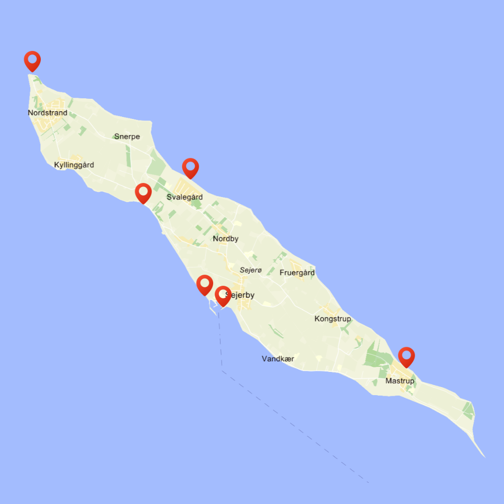
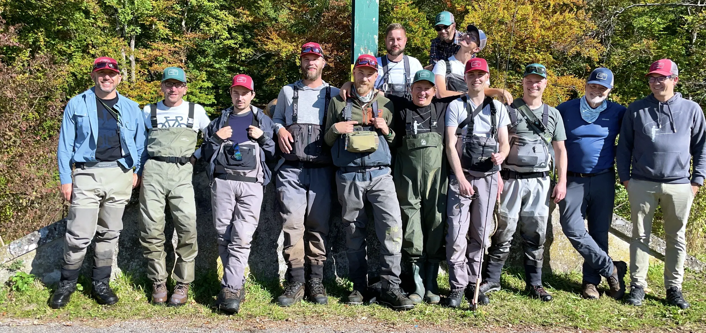

Sejerø er hjem til flere dejlige strande der breder sig langs kysten.
Her i blandt finder man gode badestrande med rent og børnevenligt badevand. Lige meget hvor på
øen
du
er, er der en strand i nærheden,
til de varme sommer dage eller hvis man har lyst til et opfriskende gys i de kolde
vintermåneder.
Det er også en oplagt mulighed til at tage f.eks. paddleboard med til en frisk lille sejletur
langs
øen.
Herunder finder du et kort af øens strande.


Sejerøs nydelige havn har god plads mellem molehovederne. Der er mange pladser havnen, dels langs
de
lange ydermoler og dels i pælepladserne inde i inderhavnen.
Havnen har en rig historie som en tidligere fiskerihavn, og med lidt held kan I købe en fisk til
aftensmaden, eller spise jer mætte i spisehuset Sejerøhuset eller på Café Sejerø.
Har du brug for mere info vedrørende havnen som f.eks. havnetakster, kan du finde det på
havneguide.dk

Farvandet omkring Sejerø byder på de fineste spisefisk, der findes i Danmark, så som:
Der er mange, der dyrker fluefiskeri med stor entusiasme på Sejerøs kyst, og de får ofte en
herlig
fight
med et stykke sølvtøj.
Navnlig i efteråret er der store chancer for at fange havørred fra kysten.
Hvis man ønsker at fange fladfisk – eller hvis heldet er med én – pighvar, så er det nemmest
selv at
stampe sine sandorme, som også giver det bedste udbytte.
Sejerø har også en fritidsfiskerforening som opholder sig i klubhuset på Sejerø havn. Foreningen
drives
på nuværende tidspunkt af formanden Hans-Henrik Kaae. Foreningen hygger sig bl.a. hver onsdag i
sommerhalvåret.
Det koster 400 kr. pr. år.
Det kræver at du har et fisketegn for at kunne fiske i havet.
